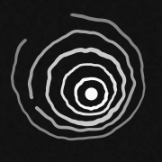

ORMALast updated: 5 November 2026
These terms are a legal agreement between you and Rayan Aman (“we”, “us”), the operator of the Orma app (“Orma”, “the app”). By creating an account or using Orma, you agree to them. If you do not agree, do not use the app.
You must be at least 18 years old to use Orma. When you sign up you give us your date of birth and confirm it is accurate. On iPhone, we may also ask Apple for your age range. Accounts we believe belong to someone under 18 will be removed.
You are responsible for keeping your login secure and for everything that happens under your account. Provide accurate information when you sign up, and keep it current. Tell us promptly if you believe your account has been compromised.
Orma is under active development. It may contain bugs, change without notice, lose or corrupt data, or be unavailable at times. Features may be added, changed or removed. We provide the app “as is” and “as available”, without warranties of any kind, to the fullest extent the law allows.
Orma records and displays location. It is not a safety, emergency, or navigation tool, and must not be relied on as one. Do not use it while driving or in any way that endangers you or others. Think before you share: anything you reveal to accepted friends or post in a community exposes places associated with you. You are responsible for who you add and what you share.
Explore lawfully and at your own risk. Places shown in Orma (streets, landmarks, cafes) come from public map data and from other users. A place appearing in the app does not mean it is open, safe, accessible, or that you are allowed to enter it. Obey the law and posted rules, respect private property, do not trespass, and stay aware of your surroundings. You are responsible for where you go and what you do there.
You agree not to:
Orma has zero tolerance for objectionable content and abusive users. You can report any photo, comment, review, postcard or user from inside the app, and block anyone, which removes them as a friend and stops them adding you again. We aim to review reports within 24 hours, remove content that breaks these terms, and may permanently ban the accounts responsible. We report child sexual abuse material to the Canadian Centre for Child Protection (Cybertip.ca) and to law enforcement, as the law requires.
You keep ownership of the photos, comments, and other content you create in Orma. You grant us a limited, worldwide, royalty-free licence to host, store, reproduce, and display that content solely to operate and provide the app — for example, showing your photo to a friend you shared it with. This licence ends when you delete the content or your account, except for copies we are required to retain by law or that have already been shared with others.
You are responsible for your content and confirm you have the right to post it. We may remove content or restrict accounts that violate these terms or that we reasonably believe are harmful, and we offer in-app tools to report and block other users.
We respect copyright and respond to notices of claimed infringement under the U.S. Digital Millennium Copyright Act (17 U.S.C. § 512). Our designated agent, registered with the U.S. Copyright Office (registration DMCA-1086305), is:
Rayan Aman, Copyright Agent, Orma
603 Kennedy Circle West, Milton, Ontario L9E 1R4, Canada
Phone: 647-546-8516
Email: copyright@orma.earth
Your notice must include: (1) your physical or electronic signature; (2) identification of the copyrighted work you claim is infringed; (3) identification of the material you claim is infringing and enough information for us to find it in the app (for example, the username and a description or screenshot of the photo); (4) your name, address, telephone number and email; (5) a statement that you have a good-faith belief that the use is not authorized by the copyright owner, its agent, or the law; and (6) a statement that the information in the notice is accurate and, under penalty of perjury, that you are the copyright owner or authorized to act on the owner’s behalf. Incomplete notices may not be acted on. Knowingly misrepresenting that material is infringing can make you liable for damages (17 U.S.C. § 512(f)).
Counter-notice. If your content was removed and you believe that was a mistake or misidentification, you may send our agent a counter-notice containing: (1) your physical or electronic signature; (2) identification of the material removed and where it appeared before removal; (3) a statement under penalty of perjury that you have a good-faith belief the material was removed as a result of mistake or misidentification; and (4) your name, address and telephone number, and a statement that you consent to the jurisdiction of the U.S. Federal District Court for the judicial district where your address is located (or, if your address is outside the United States, any judicial district in which we may be found), and that you will accept service of process from the person who sent the original notice or their agent. We will forward the counter-notice to the original complainant and may restore the material in 10 to 14 business days unless they tell us they have filed a court action.
Canada. Rights holders may also send us a notice under Canada’s Copyright Act (notice-and-notice regime); we will handle it as that Act requires, including forwarding it to the user concerned.
Repeat infringers. We will terminate, in appropriate circumstances, the accounts of users who repeatedly infringe.
For other rights complaints (for example privacy or defamation), email support@orma.earth or use the in-app report tools.
You may stop using Orma and delete your account at any time from your profile in the app (You → Delete account). We may suspend or terminate access if you violate these terms, if required by law, or if continuing to provide the app to you would expose us or others to risk. Sections that by their nature should survive termination (for example, ownership, disclaimers, and limitation of liability) will survive.
Orma relies on third-party services (including Apple, Supabase, Mapbox, Expo, Sentry, and OpenStreetMap). Your use of the app is also subject to Apple’s App Store terms. We are not responsible for third-party services, and their handling of data is described in our Privacy Policy.
To the fullest extent permitted by law, we are not liable for any indirect, incidental, special, consequential, or punitive damages, or for any loss of data, profits, or goodwill, arising from your use of (or inability to use) Orma. Nothing in these terms limits liability that cannot be limited by law. Our total liability to you for all claims relating to Orma is limited to the greater of the amount you paid us in the 12 months before the claim and CAD $50. Some jurisdictions do not allow certain limitations, so some of the above may not apply to you. If you live in Quebec, these limitations apply only to the extent permitted by the Consumer Protection Act and the Civil Code of Québec.
To the extent permitted by law, you agree to compensate us for claims, losses and reasonable legal costs that arise from content you post, your breach of these terms, or your violation of the law or of anyone’s rights while using Orma.
If you downloaded Orma from Apple’s App Store: (a) these terms are between you and Rayan Aman, not Apple, and Apple is not responsible for Orma or its content; (b) Apple has no obligation to provide maintenance or support for Orma; (c) if Orma fails to conform to an applicable warranty, you may notify Apple, which will refund the purchase price (if any), and to the maximum extent permitted by law Apple has no other warranty obligation; (d) Apple is not responsible for addressing any claims relating to Orma, including product liability claims, claims that Orma fails to meet a legal or regulatory requirement, and consumer protection claims; (e) if a third party claims that Orma infringes their intellectual property rights, we, not Apple, are responsible for investigating, defending, settling and discharging that claim; (f) you confirm that you are not located in a country subject to a U.S. Government embargo or designated as a “terrorist supporting” country, and that you are not on any U.S. Government list of prohibited or restricted parties; and (g) Apple and its subsidiaries are third-party beneficiaries of these terms and may enforce them against you. Your use of Orma must also comply with the App Store’s Usage Rules.
We may update these terms as the app evolves. If we make material changes we will update the date above and notify you in the app. Continuing to use Orma after changes take effect means you accept the updated terms.
These terms are governed by the laws of the Province of Ontario and the federal laws of Canada applicable therein, without regard to its conflict-of-laws rules. The courts of that jurisdiction will have exclusive jurisdiction over any dispute, unless mandatory local consumer law gives you the right to bring proceedings elsewhere.
These terms are available in French and English. The French version is presented to you first; you may choose to read and accept the English version instead. Both versions are equally valid.
Orma is operated by Rayan Aman, Ontario, Canada.
support@orma.earth